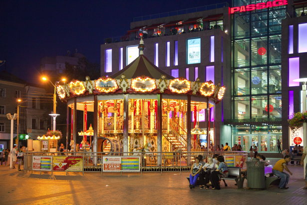
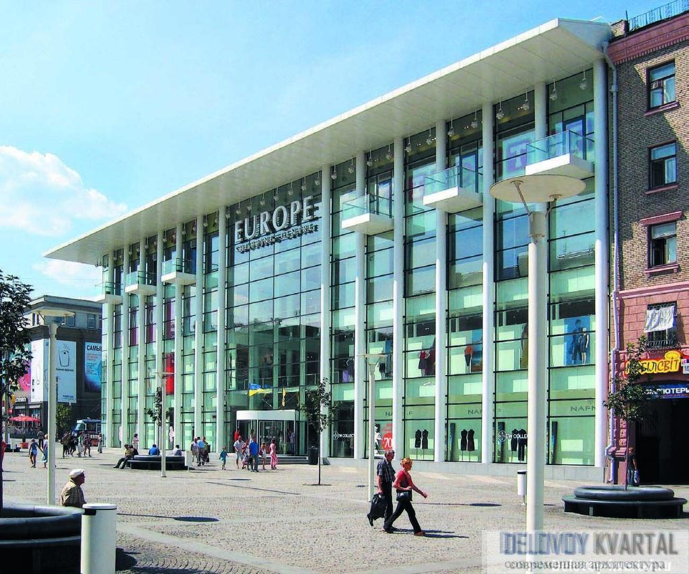

Історія бульвару
Європейська площа збудована ще в 18 столітті на території козацької слободи Половиця. Сталося це до заснування Катеринослава! Спершу бульвар називався Залізним. Із середини 1960-тих років це вже вулиця, названа на честь загиблого управлінця КДБ Миколи Миронова. У 1990-тих Європейська площа майже цілком перетворюється на «Катеринославський» ринок. Міська влада здійснювала безліч спроб закрити його, утім успіху досягла лише 2003 року. У часи Революції Гідності на бульварі збиралися на мітинги прихильники Євромайдану.
Що можна побачити на бульварі
Європейська площа – сучасне місце для відпочинку мешканців і гостей міста, протяжністю 155 метрів. На бульварі можна відпочити в затишних кафе та ресторанах, скористатися безкоштовним Wi-Fi, відвідати торгово-діловий центр «Європа», купити сувеніри та подарунки для рідних. Родзинкою площі є Французька карусель, виготовлена славнозвісною Соncept 1900 International – фірмою, яка зберігає традиції виробництва подібних атракціонів уже більше 100 років!
 
Локація